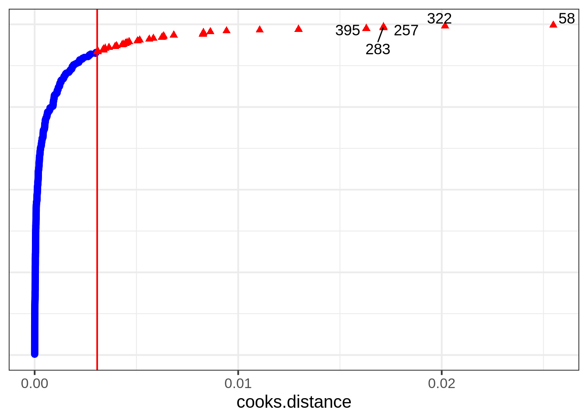
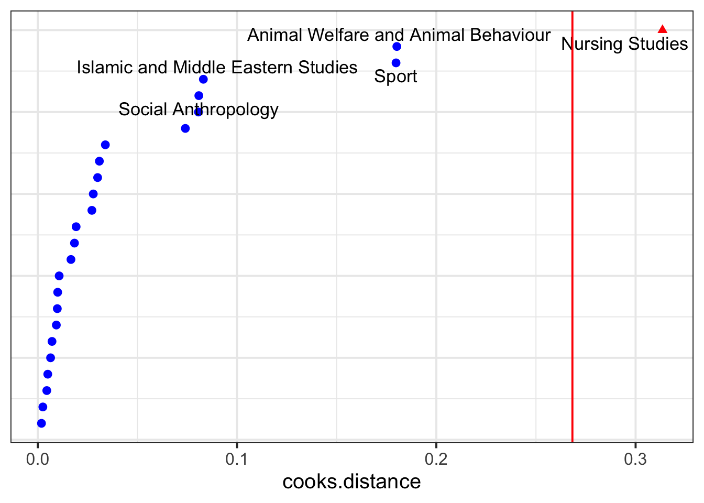
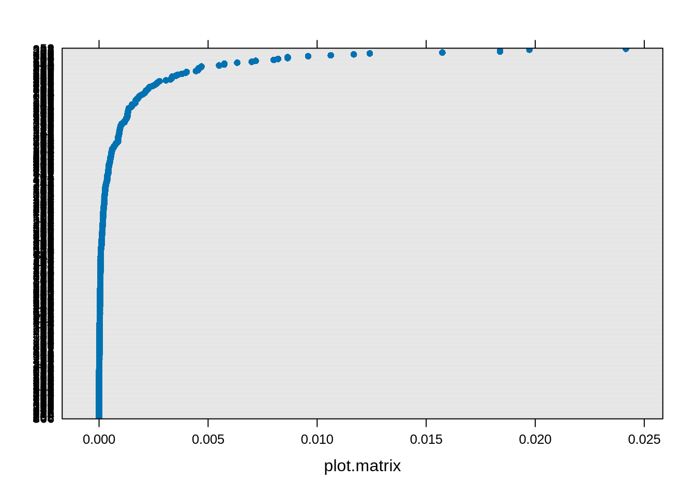
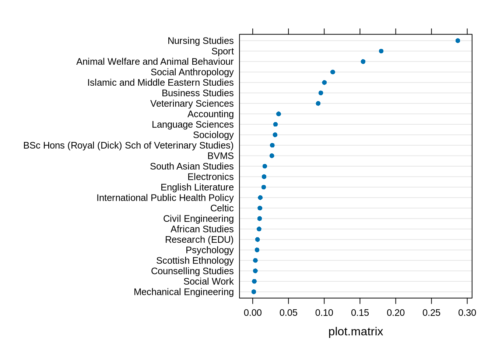

| variable | description |
|---|---|
| NSSrating | National Student Satisfaction rating for the department |
| dept | Department name |
| payscale | Pay scale of employee |
| jobsat | Job satisfaction of employee |
| jobsat_binary | Binary question of whether the employee considered themselves to be satisfied with their work (1) or not (0) |
Detect influential points and groups
After fitting our LMM, we can check whether any individual points or any particular levels of our grouping variables are unduly influencing our model’s estimates.
Example: University job satisfaction
Let’s suppose we are studying employee job satisfaction at the university, and we want to estimate the association between pay-scale and job satisfaction, controlling for the NSS rating of departments.
We have 399 employees from 25 different departments, and we got them to fill in a job satisfaction questionnaire, and got information on what their payscale was. We have also taken information from the National Student Survey on the level of student satisfaction for each department.
Each datapoint here represents an individual employee, and these employees are grouped into departments.
jobsat <- read_csv("https://uoepsy.github.io/data/msmr_nssjobsat.csv")Here’s the maximal model for this data:
jobsat_mod <- lmerTest::lmer(
jobsat ~ 1 + payscale + NSSrating + (1 + payscale | dept),
data = jobsat
)We are predicting employee’s job satisfaction as a function of their pay scale and the department’s NSS rating. We’re also including by-department adjustments to the fixed intercept and to the slope over payscale.
To see where the lmerTest::lmer() bit comes from, see Get p-values for LMM coefficients.
Detecting influential points and groups
In simple LMs, we only looked out for influential points. In LMMs, we should also be on the lookout for influential groups, that is, particular levels of a grouping variable which influence the model’s estimates.
There are two main R packages for examining influence in multilevel models: HLMdiag and influence.ME.
HLMdiag:
- works only for
lmer(), notglmer() - runs more quickly than
influence.ME
influence.ME:
- works both for
lmer()andglmer() - runs more slowly than
HLMdiag
HLMdiag
This package gives us a function called hlm_influence(). To check observation-level influence, we use the argument level = 1, or to check group-level influence for the dept grouping variable, we write level = 'dept'. Finally, we write approx = TRUE to specify that we’re only looking for approximate calculations of the influence measures (approximating the measures is why HLMdiag is faster than influence.ME).
library(HLMdiag)
inf_obs <- hlm_influence(model = jobsat_mod, level = 1, approx = TRUE)
inf_dept <- hlm_influence(model = jobsat_mod, level = "dept", approx = TRUE)The resulting data frames contain a lot of different influence measures. For example, here are the approximated Cook’s Distances of the first six observations:
inf_obs$cooksd |> head()[1] 2.69e-04 9.72e-06 1.17e-04 2.37e-05 2.95e-05 1.25e-06And here are the approximated Cook’s Distances of the first six depts:
inf_dept$cooksd |> head()[1] 0.0107 0.0309 0.0278 0.0741 0.0098 0.0192We can also plot these metrics.
Here’s the Cook’s Distance for all observations, including a cutoff (the red line) at the third quartile + three times the inter-quartile range of the observed Cook’s Distances. This is a somewhat arbitrary threshold—to really check the impact of these observations, you’d want to run a sensitivity analysis (see below).
dotplot_diag(inf_obs$cooksd, cutoff = "internal")
And here is the Cook’s Distance for each department:
dotplot_diag(inf_dept$cooksd, index = inf_dept$dept, cutoff = "internal")
The sensitivity analysis below will double-check on the Nursing Studies group to see whether it might be unduly influencing the model’s results.
influence.ME
The influence.ME gives us a function called influence(). To check observation-level influence, we specify obs = TRUE, or to check group-level influence for dept, we specify group = "dept".
influence() does a bit more work behind the scenes, which is what makes it slower: it iteratively deletes each observation or each group, re-fits the model, and compares the complete model to the one with the observation/group deleted.
library(influence.ME)
inf_obs <- influence(model = jobsat_mod, obs = TRUE)
inf_dept <- influence(model = jobsat_mod, group = "dept")Now we can use plot() to show influence measures like Cook’s Distance.
The Cook’s Distance for each observation (the y axis labels are the index of each observation, but so squished together that you can’t really read them):
plot(inf_obs, which = "cook", sort = TRUE)
For each dept:
plot(inf_dept, which = "cook", sort = TRUE)
Again, Nursing Studies appears to have a stronger influence on the model than the other departments. To see whether it affects our conclusions, we’ll do a sensitivity analysis.
Sensitivity analysis
A sensitivity analysis involves fitting our model with and without a given observation/group and examining whether/how our conclusions change.
Because Nursing Studies appears to have fairly strong influence on jobsat_mod, let’s try fitting another version of this model that doesn’t include the Nursing Studies data.
jobsat_mod_NS <- lmerTest::lmer(
jobsat ~ 1 + payscale + NSSrating + (1 + payscale| dept),
data = jobsat |> filter(dept != "Nursing Studies")
)And we’ll compare the coefficients and pattern of significance in the two models.
WITH Nursing Studies:
summary(jobsat_mod)Linear mixed model fit by REML. t-tests use Satterthwaite's method [
lmerModLmerTest]
Formula: jobsat ~ 1 + payscale + NSSrating + (1 + payscale | dept)
Data: jobsat
REML criterion at convergence: 1254
Scaled residuals:
Min 1Q Median 3Q Max
-2.8106 -0.6311 0.0156 0.6576 2.6214
Random effects:
Groups Name Variance Std.Dev. Corr
dept (Intercept) 0.8724 0.934
payscale 0.0866 0.294 -0.49
Residual 1.0372 1.018
Number of obs: 399, groups: dept, 25
Fixed effects:
Estimate Std. Error df t value Pr(>|t|)
(Intercept) 14.526 0.998 24.531 14.56 1.4e-13 ***
payscale 0.336 0.080 23.228 4.21 0.00033 ***
NSSrating 0.428 0.132 20.826 3.25 0.00385 **
---
Signif. codes: 0 '***' 0.001 '**' 0.01 '*' 0.05 '.' 0.1 ' ' 1
Correlation of Fixed Effects:
(Intr) payscl
payscale -0.331
NSSrating -0.900 0.000WITHOUT Nursing Studies:
summary(jobsat_mod_NS)Linear mixed model fit by REML. t-tests use Satterthwaite's method [
lmerModLmerTest]
Formula: jobsat ~ 1 + payscale + NSSrating + (1 + payscale | dept)
Data: filter(jobsat, dept != "Nursing Studies")
REML criterion at convergence: 1213
Scaled residuals:
Min 1Q Median 3Q Max
-2.9185 -0.6156 0.0256 0.6346 2.6011
Random effects:
Groups Name Variance Std.Dev. Corr
dept (Intercept) 0.266 0.516
payscale 0.085 0.292 -0.59
Residual 1.030 1.015
Number of obs: 388, groups: dept, 24
Fixed effects:
Estimate Std. Error df t value Pr(>|t|)
(Intercept) 15.4381 0.9991 20.9069 15.45 6.5e-13 ***
payscale 0.3238 0.0806 22.2258 4.02 0.00057 ***
NSSrating 0.3180 0.1316 18.6107 2.42 0.02610 *
---
Signif. codes: 0 '***' 0.001 '**' 0.01 '*' 0.05 '.' 0.1 ' ' 1
Correlation of Fixed Effects:
(Intr) payscl
payscale -0.296
NSSrating -0.914 -0.013The effect size for NSSrating becomes a bit smaller once we exclude Nursing Studies. But at \(\alpha = .05\) (the standard significance level in Psychology and related fields), the pattern of significance does not change. So the sensitivity analysis allows us to conclude that the model’s estimates aren’t being driven purely by the data from the Nursing Studies department.
Linked flash cards
Outgoing links
- TODO
Backlinks
- TODO